10/23/2016
Introducing
Simon
Simon's an 11 yr old Morgan/Welsh gelding. I have him on loan from
a friend to use as a hunt horse this season. That means
he gets dressage and jumping lessons, too, so we
can develop our communications skills and will
be on the same page when we're out having fun.
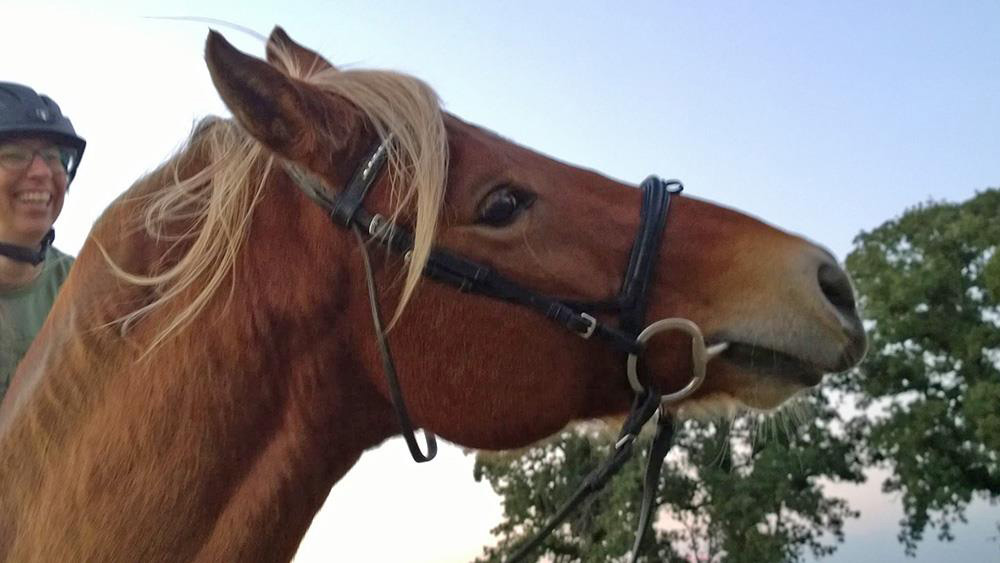
First ride on Simon. He wasn't sure about going back to work, but he
loved being scratched.
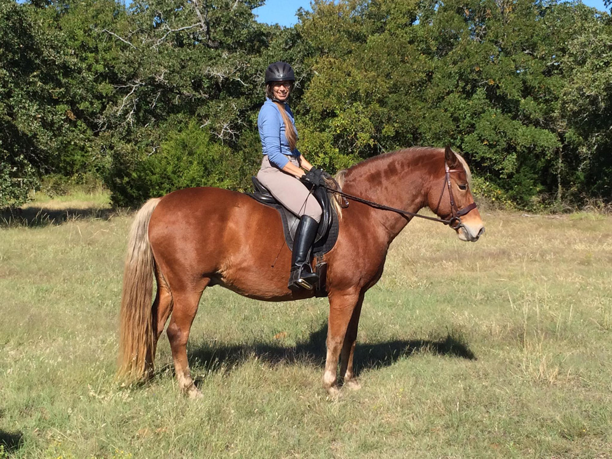
Out at the kennels. He wasn't sure about all the hounds, but handled the
woods and excitement well.
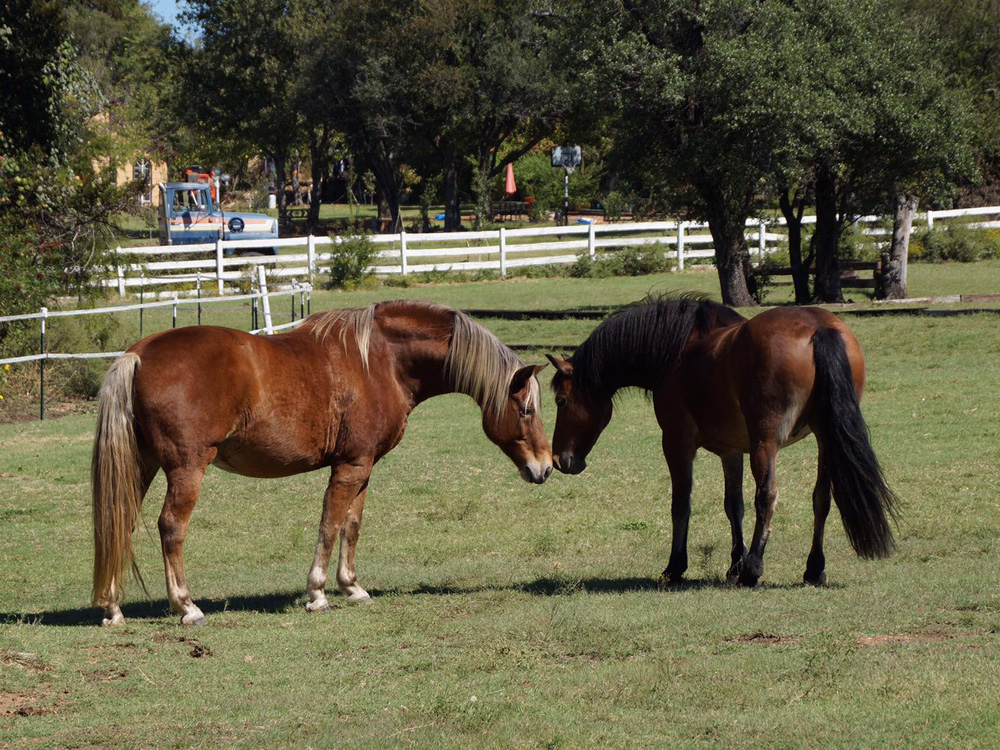
Meeting Topper. Simon is around 15.2 hh and Topper is 14 hh. They got
along immediately.
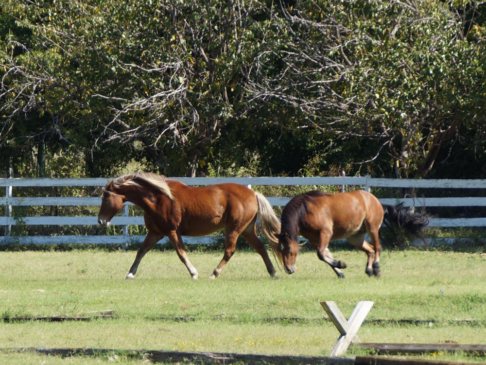
Topper was so happy to have someone to run around with. Simon did a
bit of running, but Topper ran rings around him.
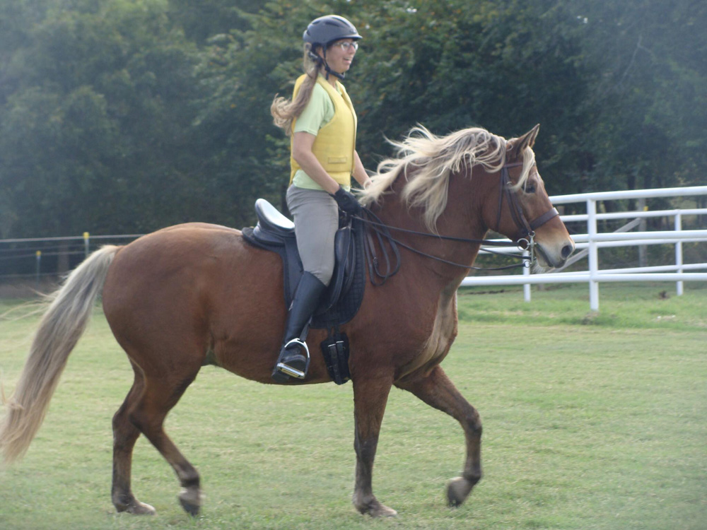
At a XC schooling day getting used to each other.
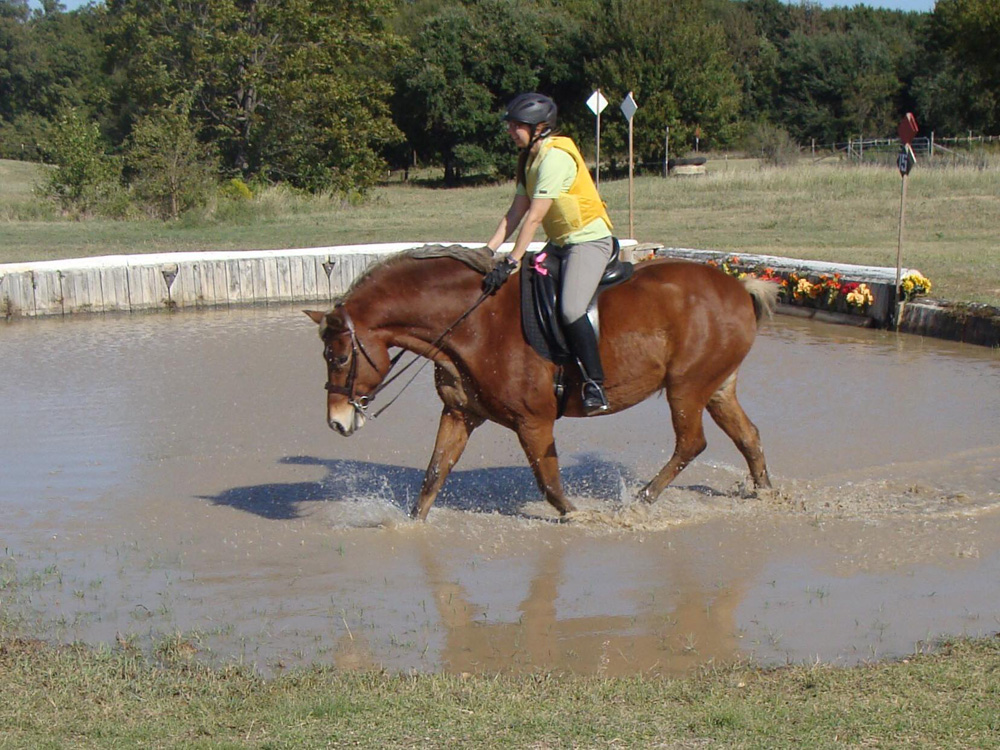
Great through the water. He did lay down afterwards, though. Have to
watch out for those pony tricks.
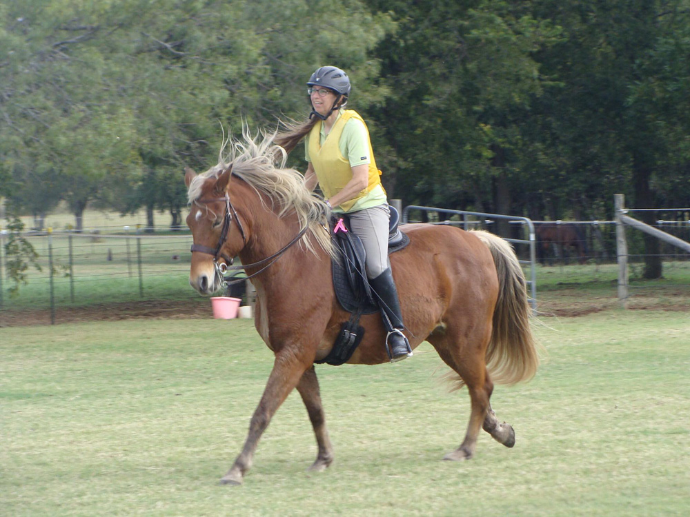
He's got a comfortable canter. We just need to learn to communicate for
the transitions.
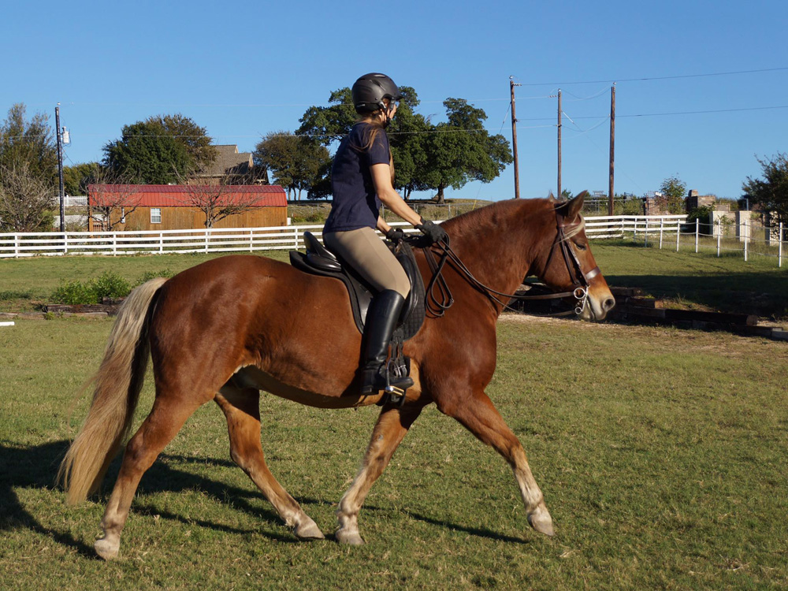
At home starting some dressage work.
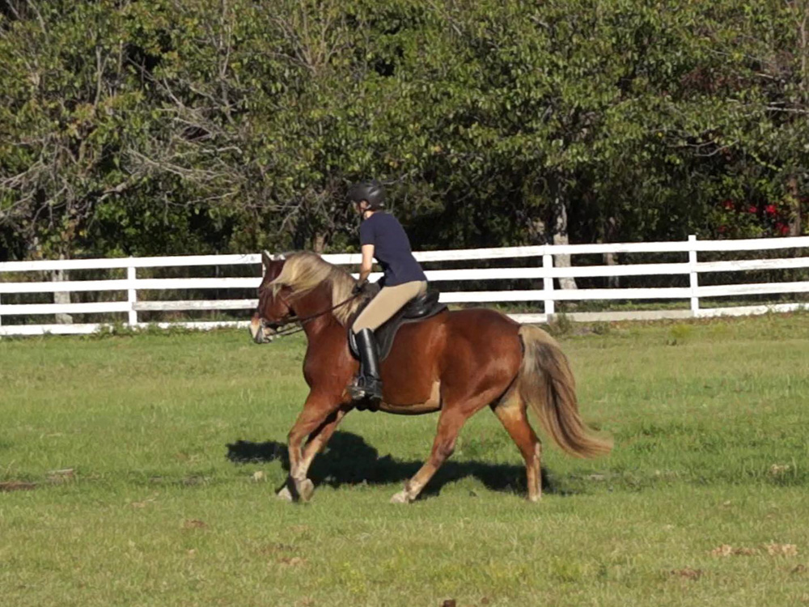
Always a little canter to let him know it's ok.
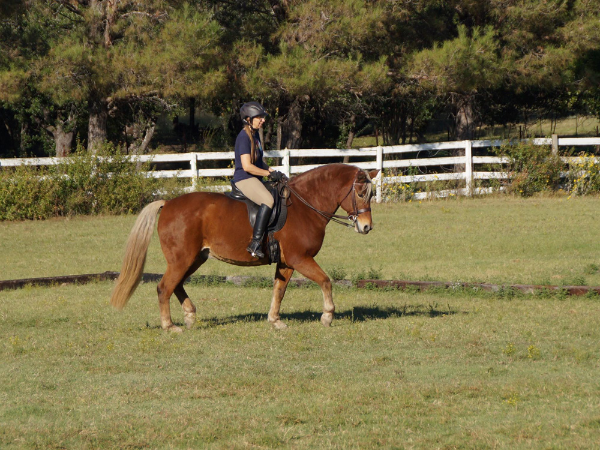
We're starting to get right bend.
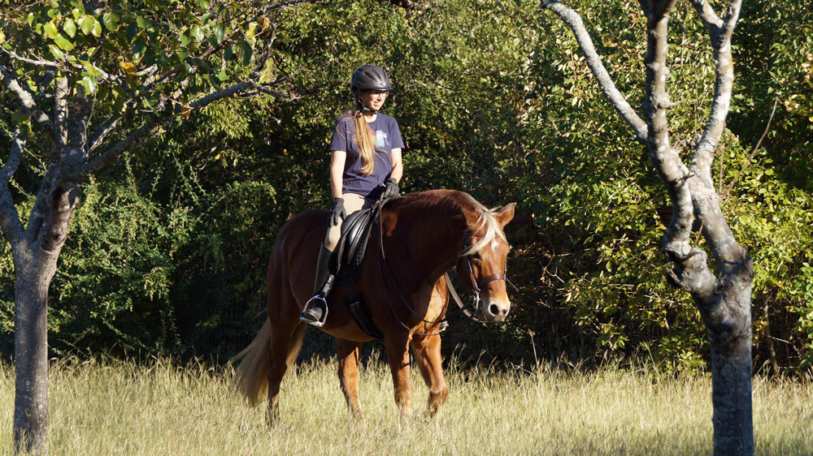
Nice and calm out and about.
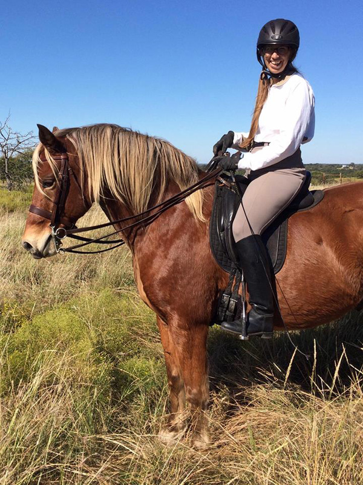
He was happy out with the hunt, but never got too excited.
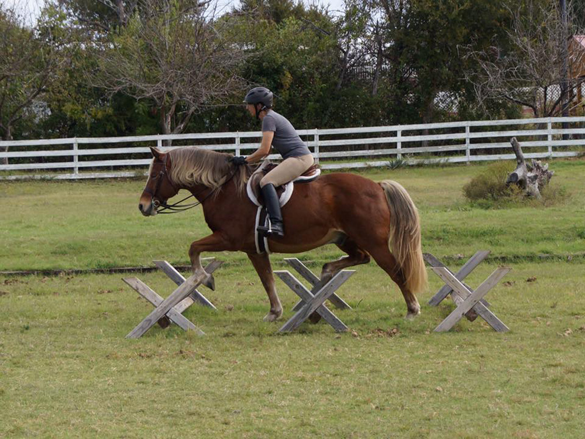
Good over the cavaletti. A lot of spring and energy.
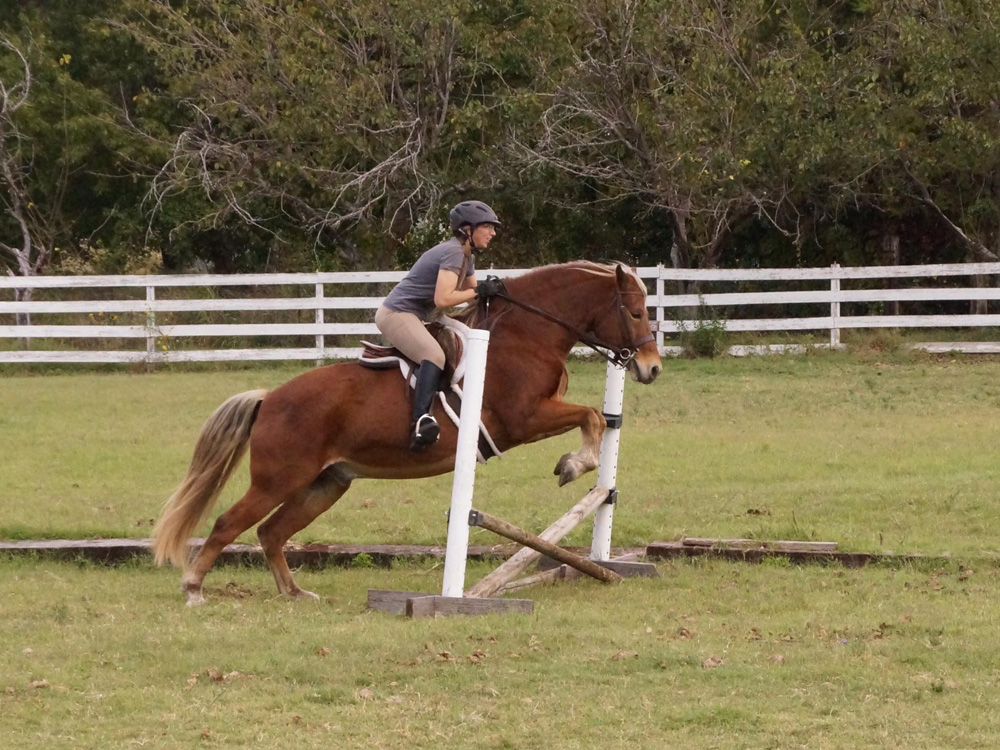
Starting him over jumps so we know we can handle trees in our path if
needed. He seemed to like it.